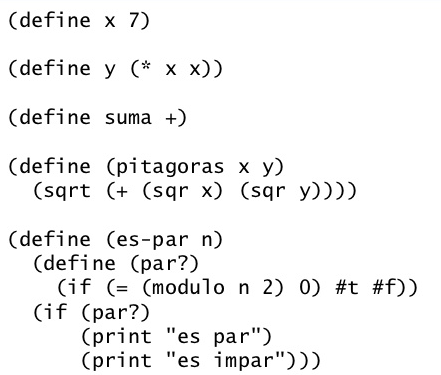

Tarea 5
SCHEME
SÍMBOLOS
Un símbolo es lo que en otros lenguajes se denomina identificador. En Scheme los símbolos e identificadores pueden contener caracteres internacionales (Unicode, UTF-8). El intérprete DrScheme guarda los ficheros de texto en esa codificación.
'hola
(symbol 'hola-que<>)
(symbol->string 'hola-que<>)
'mañana
'lápiz ; aunque sea posible, no vamos a usar acentos en los símbolos
; pero sí en los comentarios
(symbol? 'hola) ; #t
(symbol? "hola") ; #f
(symbol? #f) ; #f
(equal? 'hola 'hola)
(equal? 'hola "hola")
Diferencia entre símbolos y cadenas: un símbolo (identificador) es un objeto simple y una cadena es un objeto compuesto. El intérprete de Scheme codifica un símbolo mediante un único número, su valor hash. Otra diferencia bastante clara: un símbolo no puede contener un espacio, pero una cadena sí.
SINTAXIS
|
Función |
Descripción |
|
|
Condicionales básicas |
||
|
if |
Condicional simple |
(if <condicion>
|
|
cond |
Condicional anidado |
(cond
|
|
else |
Sentencia condicional en el cond que determina que el siguiente valor de verdad es falso |
[else (<valor de verdad de falso>)]) |
|
#t o true |
Valor de verdad de verdadero |
(if <condicion> #t ...) o
|
|
#f o false |
Valor de verdad de falso |
(if <condicion> ... #f) o
|
|
and |
Operador condicional y, las condiciones tienen que ser verdaderas para que arroje un valor de verdad verdadero |
(<condicion a> and <condicion b>) |
|
or |
Operador condicional o, con que solo una de las condiciones se cumpla se arrojara un valor de verdad verdadero |
(<condicion a> or <condicion b>) |
|
not |
Operador condicional no, invierte la condición, si la condición arroja verdadero, con el not esa misma condición arrojara falso |
(not <condicion>) |
|
Más de condicionales |
||
|
number? |
Evalúa si el dato es un numero |
(number? 123) |
|
string? |
Evalúa si el dato es una cadena de texto |
(string? "hola mundo") -> #t |
|
string=? |
Evalúa si el dato (implicando que sea una cadena de
texto) es
|
(string=? "hola mundo" "hola mundo")
|
|
integer? |
Evalúa si el dato es un numero |
(integer? 123) -> #t |
|
negative? |
Evalúa si un número es negativo |
(negative? -123) -> #t |
|
positive? |
Evalúa si un número es positivo |
(positive? 123) -> #t |
|
zero? |
Evalúa si un número es cero o no |
(zero? 0) -> #t |
|
Numéricos |
||
|
abs |
Arroja el valor absoluto de un numero |
(abs -123) -> 123 |
|
sqr |
Arroja el valor de un número elevado al cuadrado |
(sqr 5) -> 25 |
|
expt |
Arroja el valor de un número elevado a una potencia indicada por el usuario, el segundo numero ingresado es el exponente |
(expt 5 2) -> 25 |
|
sqrt |
Arroja la raiz cuadrada de un numero |
(sqrt 25) -> 5 |
|
ceiling |
Aproxima un numero real al siguiente entero, aproxima a techo |
(ceiling 25.5) -> 26 |
|
floor |
Aproxima un numero real a su equivalente en entero, aproxima a piso |
(floor 25.5) -> 25 |
|
pi |
El valor numérico de pi |
pi -> #i3.141592653589793 |
|
Otros |
||
|
define-struct |
Es la declaración para crear una estructura |
(define-struct ejemplo
|
|
list o ' |
Es la declaración para crear una lista |
(list 1 2 3 4) o '(1 2 3 4) |
|
cons |
Es la declaración para crear una lista, siempre se finaliza con un empty y cerrando todas las declaraciones |
(cons 1 (cons 2 (cons 3 empty))) |
|
append |
Une dos listas |
(append (list 1 2 3)
|
|
empty |
Un tipo de dato que representa nulo o vacío, sirve para finalizar listas |
(cons empty empty) |
|
empty? |
Evalúa si un elemento es nulo o vacío |
(empty? (list 1 2)) -> #f |
ESQUELETO DE LOS PROGRAMAS
APLICACIÓN A DESCARGAR PARA EDITAR Y EJECUTAR
DrScheme es el mejor IDE de Scheme, de acuerdo a la comunidad de StackOverflow. Tiene integrado un compilador JIT, y pueden producirse ejecutables stand-alone.
A QUE TIPO DE PARADIGMA PERTENECE
Paradigma funcional puro
EJECUCIÓN DE UN PROGRAMA
- Programa que dibuja un triángulo
(define (T) ;lo que hacemos con esta función es la figura con la que se
;llenara el triángulo
(display "*"))
(define (dibuje cant) ;esta funcion me dibuja los "*" pasando un espacio
:entre ellos
(do ((i 0 (+ i 1)))
((= i cant) )
(t)
(display " ")))
(define (triangulo) ;y esta es la que me dibuja el triangulo aquí defino
;que el tamaño sea de 10 *'s
(do ((i 1 (+ i 1)));observa como se hace el ciclo :D
((= i 10) )
(dibuje i);llamada a la funcion
(newline)));pasa renglon